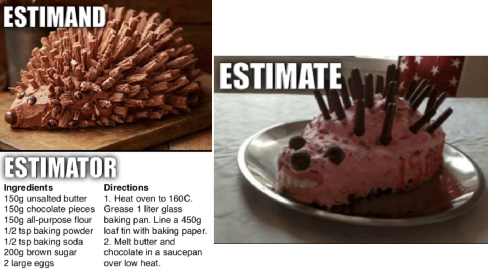

Giving Effective Feedback (Data Science Edition)#
One of the best ways to thrive in the workplace is to help those around you be successful. This can, at times, feel counter-intuitive — we all have a natural tendency to measure ourselves against those around us, which can result in a feeling of implicit competitiveness with peers. But helping your colleagues be more effective isn’t just a good thing to do from an ethical perspective — it will also make your teams and units more effective, improve your professional reputation, make people eager to involve you in new projects, and make colleagues more likely to reciprocate with your generosity.
Providing detailed, constructive feedback is one of the best ways to help colleagues. Yet it’s a skill we rarely teach. In this reading, I provide a framework for giving feedback that’s specific to empirical data science. As with everything in this book, you may eventually decide this approach to feedback is not for you, and that you already have a style of feedback you enjoy. But give it a try and if nothing else, it will give you a foil to help you understand what you don’t like in feedback!
Levels of Feedback#
The key to effective feedback on data science projects, in my view, is to recognize the multiple levels on which all data science projects operate (and where they can fall apart):
Approach - Problem fit: given the problem that motivates the project, will the question the author is seeking to answer actually help address the problem?
Does the project have a good strategy for answering the question?: Is the strategy being employed a good one for answering the question they have set out to answer (at least in theory)?
Was the strategy executed successfully/Do you believe the answer generated?: Basically, do you believe the answer generated by the analysis? Are there issues with the result, data, or diagnostics that give you pause?
A project can have issues at any (or all) of these three levels, and each step of this ladder from motivation to estimated answer is a place where feedback can be provided.
Richard McElreath, author of the amazing book Statistical Rethinking, argues you can divide statistical analyses into a similar ladder of abstraction (it’s a touch different from mine, but similar). He refers to the levels of an analysis as:
The Estimand: What are you trying to measure in substantive — not statistical — terms. For example, “gender wage discrimination” or “the effect of opioids on neurologic pain.”
The Estimator: The specific model and specification you’ve chosen to use to measure that quantity, like linear regression or logistic regression.
The Estimate: the actual number that you get from the model.
Delightfully, he also uses this figure to emphasize the inevitable… challenges that emerge at each transition from theory to empirical reality:

Students tend to feel most comfortable at the lowest of these levels of abstraction — data science classes tend to emphasize factor engineering and model diagnostics, so students have the most practice raising concrete concerns about model fitting and implementation. Yet that is also the domain where most other data scientists are likely to feel most comfortable, and so while feedback at this level is valuable, learning to reflect more on project motivation and how the project fits with the motivating problem often gives one a comparative advantage in providing useful feedback.
Ask What Kind of Feedback Your Colleague is Seeking#
Before anything else, be sure to ask your colleague what type of feedback they are looking for. There are times that people are looking for any and all feedback on their project. More often than not, though, your colleagues will be particularly interested in your thoughts on certain aspects of their work, and will already know that some parts of a project need improvement (and so won’t want you spending time telling them about issues they are already aware of).
It’s also important to bear in mind what changes are feasible. If someone comes to you to practice a presentation they are giving to their boss in two days, there’s nothing to be gained by telling them they could have approached the whole project a different way and it would have turned out better. All that type of feedback would accomplish is to wreck their confidence on the eve of a big presentation.
Providing Written Feedback#
What follows is how I approach providing written feedback. I generally prefer to provide my comments in written form, and I think writing is the best way to force yourself to be precise in your thinking, allows for iteration and revision, and it ensures your colleague can revisit and reflect on the comments you have invested time in providing.
If you are providing verbal feedback, you may need to modify some of the details of what follows, but I would still suggest following a model like this.
1. Start with a Summarization#
Before you offer suggestions, begin by laying out how you understand the project. Using this framework, lay out what you understand to be:
the problem motivating the project (“This project aims to address [problem]…”),
how the project aspires to address this problem (“In order to address this problem, the seek to answer the question [question authors intend to answer]…”),
how they attempt to do so (“Using data from [such and such], the authors set out to answer this question using [modelling strategy]),
what they find expressed in concrete terms (“They find that the partial correlation between X and Y is Z.”)
how they interpret what they find (“They interpret this as evidence that the answer to their question is that [something something]”),
how they relate it back to the problem (“Given that, they argue [something about their motivating problem]…”)
At each stage, try not to fill in any gaps in the logic of your colleague’s arguments — the goal here is to make sure, concretely, you see the project precisely for all its parts.
This exercise is useful for two reasons. First, it helps you think through the project in very concrete terms. Humans are exceptionally good at seeing patterns in the world even when they don’t exist, and when reading your brain will naturally try to gloss over inconsistencies in the logic of what you are reading. Decomposing a project into granular components in this manner helps counteract that tendency, bringing attention to logical fallacies or gaps you might otherwise overlook.
Second, summarizing how you understand a project helps the project authors understand what they have communicated to the reader and the basis for the feedback you provide. Moreover, it makes it clear to the recipient of feedback that you gave their project your full attention, which is likely to make them more receptive to critiques.
2. Offer Higher-Level Thoughts On The Analysis#
It’s easy to get lost in the weeds — “fix that figure caption,” “did you try logging that variable?,” or “what about using [trendy new model]?”
But before you get into more detailed feedback, I find it helpful to provide feedback on the overall strategy of the analysis. In general, this amounts to thinking about whether the different levels of an analysis link up. For example, do you think answering the question the author sets out to answer will really help address the problem that motivated their analysis? Do you think their empirical strategy can actually answer the question they set out to answer?
When doing so, pay particular attention to the kind of “slippage” that occurs between levels of an analysis — many projects articulate a problem well and have a clear question they want to answer, but on reflect the question the authors seek to answer won’t actually help solve the problem. Similarly, sometimes an analysis will have a good question they want to answer, and a good empirical strategy, but the quantity the empirical strategy would estimate isn’t actually quite the answer to the question they authors want to know.
Say What You Think The Analysis Did Well#
As you work on this, remember to not just comment on problems — talk about the analysis’ strengths too! It’s easy to focus on the short-comings of an analysis, but emphasizing the positive not only prevents the recipient from feeling attacked, it also helps them understand the elements of their analysis that they should retain or emphasize.
Be Constructive#
Whenever you raise a concern, try to also provide some thoughts about how the concern could be addressed. It helps people to know about problems with their analyses before they show them to higher-ups, don’t get me wrong, but nothing makes people more grateful than identifying a problem and offering a solution. Your suggestion doesn’t have to be perfect. Even a so-so suggestion makes the point you see yourself as part of a collaborative enterprise (you’re working together towards getting it right!) and may inspire new lines of thinking.
Motivate Your Suggestions#
If you provide suggestions, be sure to explicitly motivate those suggestions.
Suppose you’re reading a paper trying to explain the determinants of a salary in which the authors report the bivariate correlation between different variables and salary. You might be tempted to offer a suggestion like “Don’t just present several separate correlations of employee attributes and salary, put all those variables in a single regression.” But that suggestion doesn’t explain why they should use a regression.
A better approach is to explicitly explain the problem you see with what the authors are currently doing, your suggestion for addressing it, and why you think your suggestion would solve the problem. For example, you might say “It is difficult for the reader to understand the relative importance of different employee attributes to salary when you are only presenting a set of bivariate correlations. If you put all these attributes in a regression, the reader could more easily see the relative magnitudes of the coefficients as well as their statistical significance. Moreover, it would also help the reader understand the independent role of different factors where employee attributes are correlated.”
Motivating your suggestions not only makes it more likely your colleague will take your suggestion on board, but also helps them understand your thought process. This is particularly helpful when your suggestion is something that your colleague understands would be a bad thing to implement.
As writer, when you get a suggestion that doesn’t make sense, it usually means that you failed to communicate something about the goals of your project or the constraints under which you are operating. When this happens, it is your job to ensure future readers are not similarly confused by improving how the report is written.
So as someone giving feedback, the more information you provide about your thought process, the easier it will be for your colleague to understand the source of your confusion and address it.
3. Then Get Granular, if Appropriate#
Once you’re done with strategic, high-level reflections, then you can turn to the granular. But remember, the goal isn’t to score points — if you’ve just suggested that the analysis needs to go in a fundamentally different direction, nitpicking about feature engineering just comes across as petty and annoying.
Provide Locations!#
This may seem obvious, but when providing feedback — especially granular feedback that’s more specific to a figure, sentence, or passage, be sure to state the exact location clearly in your feedback. The location you have in mind may seem self-evident to you, but I can tell you that in practice it’s rarely the case that it’s as obvious your colleague. This is important to do when writing feedback, but also important when your feedback is verbal, as when giving feedback on a presentation — verbal feedback quickly becomes a little overwhelming for recipients, and being able to take notes on what they are hearing that includes things like slide numbers or slide headings is very helpful when making changes.
4. Walk Away and Come Back#
Most of us tend to come across as a little… mean and ungenerous in the first draft of feedback we write. So I am personally a big believer in (a) walking away from my feedback after I’ve written it, (b) doing something else for a while, before (c) re-reading and editing the feedback before sending it. In a perfect world, I try to go to bed between when I finish the first draft of my feedback and when I make revisions.